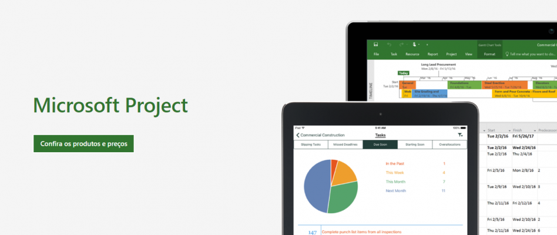
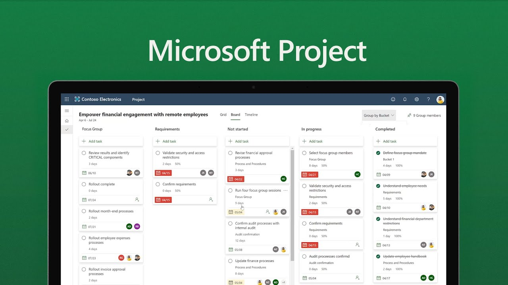
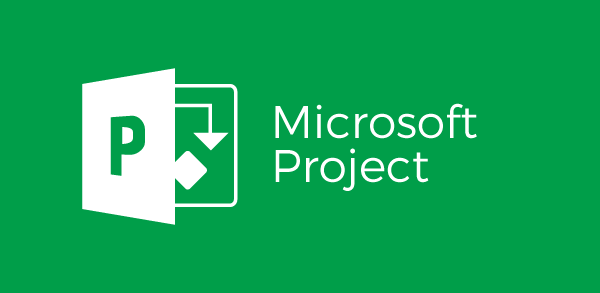
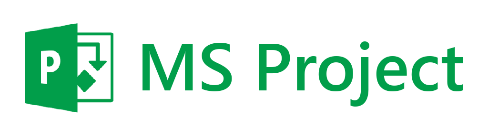

|
Microsoft Project |
Apresentação
|  | MS Project é um software de Gerenciamento de Projetos que atua em diferentes etapas da gestão. Porém, as esferas em que ele é mais diretamente relacionado são nas missões de planejamento e controle. O programa proporciona facilidades aos líderes como: calendários detalhados, distribuidores automáticos de tarefas e visualização de dados em múltiplos ângulos, entre outras vantagens. É o software de maior aceitação mundial para Gerenciamento de Projetos por sua facilidade de utilização e versatilidade de aplicação. |
| Por tornar os processos mais ágeis e também mais próximos de seus objetivos, muitos profissionais utilizam o MS Project em suas rotinas. Essa ferramenta proporciona aos líderes facilidades como calendários detalhados, distribuidores automáticos de tarefas e visualização de dados em múltiplos ângulos, entre outras vantagens. |  |
|  | Com a utilização do MS Project é possível idealizar e programar atividades, controlar prazos, estabelecer custos, designar recursos e qualificar o grau de importância de um projeto como um todo. Esta ferramenta tornou-se popular ao redor do mundo justamente por sua versatilidade de adequação a diferentes circunstâncias. |
|  |